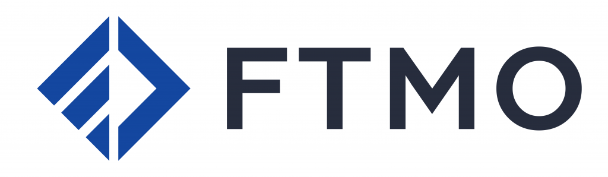
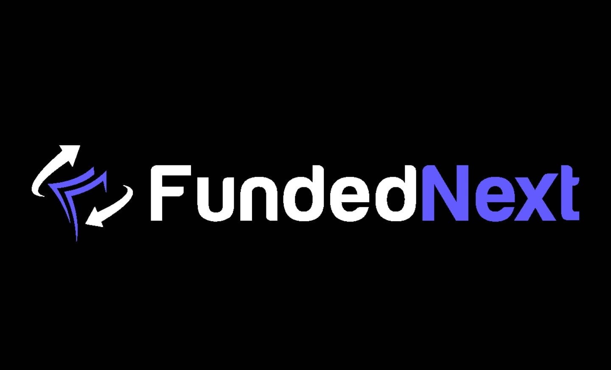

{kind=link}
{kind=link}


-
Kohlestr1
-
46509 Xanten
Nils Rohwedder
Was ist Trading? Trading ist eine Form des Börsenhandels, bei der Finanzprodukte wie Aktien, Währungen, Rohstoffe oder Kryptowährungen kurzfristig gekauft und verkauft werden, um von den Kursschwankungen zu profitieren. Trading ist also kein langfristiges Investment, sondern eine Spekulation auf die Marktentwicklung. In diesem Artikel erfährst du, wie Trading funktioniert, welche Strategien es gibt, welche Risiken du beachten musst und wie du Trading lernen kannst. Außerdem gebe ich dir einige Tipps, wie du dein Trading verbessern und optimieren kannst.
FTMO ist ein Projekt, das auf der Suche nach erfolgreichen Händlern ist. Um festzustellen, ob ein Händler alle Qualitäten hat, nach denen wir suchen, haben wir einen 2-stufigen Evaluierungsprozess entwickelt. Diese zwei Schritte bestehen aus der FTMO Challenge und der Verification. Der Ablauf ist speziell darauf zugeschnitten, das Talent eines Händlers zu entdecken. Der Weg eines Händlers ist herausfordernd, und unsere Bildungsanwendungen, die Kontoanalyse und der Performance Coach sind dazu da, unsere Händler zu begleiten.
FTMO wurde 2015 gegründet und ist seither erfolgreich in diesem Bereich. Wir haben bereits tausende Trader mit FTMO Accounts versorgt und über $160 Millionen an unsere Trader ausgezahlt. Zudem wurden wir auch mehrfach in Forbes vorgestellt und von Deloitte und EY mehrfach ausgezeichnet. Wir wissen, dass der Ruf der wertvollste Aspekt dieses Geschäfts ist, und der beste Weg, herauszufinden, ob ein Unternehmen seriös ist, besteht darin, online nach Bewertungen zu suchen. Sie können Ihre eigene Recherche durchführen und die Bewertungen von FTMO auf renommierten Bewertungsseiten wie TrustPilot, Forex Peace Army oder Forex Factory überprüfen. Viele Kunden veröffentlichen Ihr Feedback auf YouTube oder teilen ihre Erfahrungen direkt mit uns, wie Sie im Abschnitt „Testimonials“ sehen können. Und zu guter Letzt, besuchen Sie gerne unsere Community auf Discord. Wir lassen unsere Trader für uns sprechen.
Bevor Sie sich entscheiden, die FTMO Challenge anzunehmen, möchten wir sicherstellen, dass Sie wissen, worauf Sie sich einlassen. Nachdem Sie sich angemeldet haben, können Sie entweder direkt mit der FTMO Challenge beginnen oder wie wir es empfehlen, einen Probedurchlauf mit unserem Free Trial machen, was eine gekürzte Version der FTMO Challenge ist und perfekt dazu ist, um sich mit der FTMO Challenge und den einhergehenden Regeln vertraut zu machen. In unserem Free Trial bieten wir Ihnen auch die Möglichkeit, einige unserer Trading-Applikationen zu testen. Nach Ablauf Ihres Free Trials, werden Sie außerdem eine gekürzte Auswertung Ihrer Performance in dem Free Trial erhalten. Sobald Sie bereit sind, die FTMO Challenge anzutreten, können Sie Ihr Konto hier konfigurieren. Bitte beachten Sie, dass Sie unser FTMO Account nicht auf Basis Ihrer Leistung in dem Free Trial oder einer anderen externen Erfolgsbilanz erhalten können. Unser Evaluierungsprozess ist so gestaltet, dass er uns genügend Anhaltspunkte liefert, um Ihre Handelsfähigkeiten festzustellen und Ihnen den Gebrauch mit unserem FTMO Account zu ermöglichen.
Hier klicken für weiterlesen Link zu FTMO FundedNext erschien im März 2022 auf der Bildfläche und stellte sich schnell als bedeutende Plattform in der Welt des Prop Tradings heraus. Mit ihrem Hauptsitz in den Vereinigten Arabischen Emiraten hat sie es sich zur Aufgabe gemacht, Händler weltweit zu unterstützen. Sie finanziert erfolgreich über 81.000 Trader in mehr als 195 Ländern, was ihre globale Reichweite und Akzeptanz unterstreicht. Diese beeindruckenden Zahlen zeigen, wie schnell FundedNext zu einer vertrauenswürdigen Adresse für Trader geworden ist, die auf der Suche nach einer zuverlässigen Finanzierungsmöglichkeit sind. Die Plattform zeichnet sich durch ihre innovative Herangehensweise im hochfrequenten Handel und Daytrading aus, wobei sie ihren Nutzern vielfältige Möglichkeiten bietet, darunter Expert Advisors (EAs) und die Nutzung von fortgeschrittenen Handelsstrategien. Durch diese Mittel haben Trader die Möglichkeit, ihre Fähigkeiten unter Beweis zu stellen und gleichzeitig vom Gewinnbeteiligungsmodell von Funded Next zu profitieren. Dabei legt die Plattform großen Wert auf Bildung und die Bereitstellung von Ressourcen, um sicherzustellen, dass ihre Trader alle notwendigen Werkzeuge für den Erfolg an den Märkten haben. Mit solch einer umfassenden Unterstützung schafft FundedNext eine Umgebung, in der Händler nicht nur gefördert, sondern auch herausgefordert werden, ihre besten Leistungen zu erbringen.
Hier klicken für weiterlesen Link zu FundedNext 
Nils Rohwedder
Kohlestr1
46509 Xanten